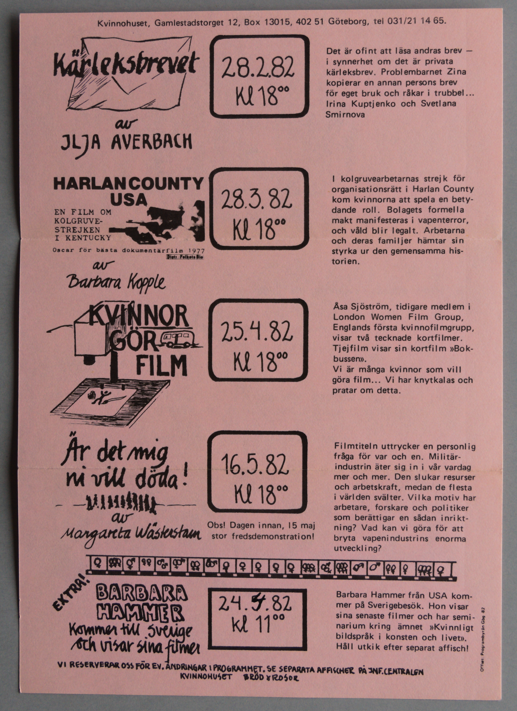
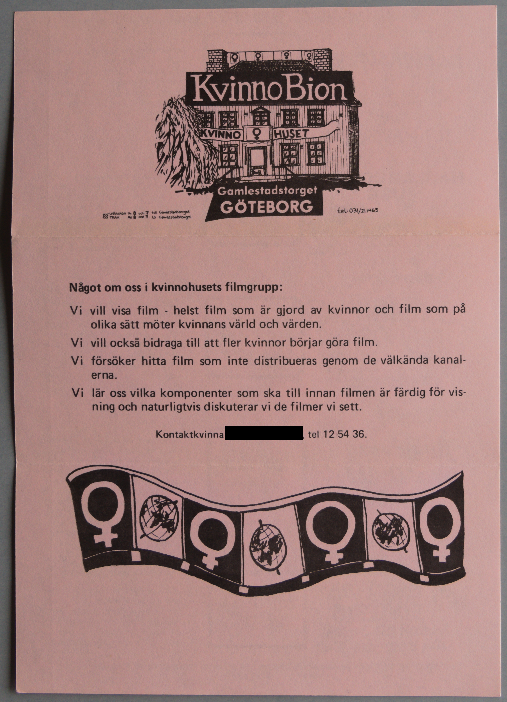

Digitiserad version av miniprogramblad från Kvinnobion
Faksimil
Transkription
Kvinnohuset, Gamlestadstorget 12, Box 13015, 402 51 Göteborg, tel 031/21 14 65
Kärleksbrevet
av
ILJA AVERBACH
HARLAN COUNTY
USA
EN FILM OM
KOLGRUVE-
STREJKEN
I
KENTUCKY
Oscar för bästa dokumentärfilm
1977
Distr.: Folkets Bio
av
Barbara Kopple
KVINNOR
GÖR
FILM
Är det mig
ni vill döda!
av
Margareta
Margaretha
Wästerstam
Extra!
BARBARA
HAMMER
Kommer till Sverige
och visar sina filmer
28.2.82
kl 1800
28.3.82
kl 1800
25.4.82
kl 1800
16.5.82
kl 1800
24.5.82
24.4.82
kl 1800
Det är ofint att läsa andras brev -
i synnerhet om det är privata
kärleksbrev. Problembarnet Zina
kopierar en annan persons
brev
för eget bruk och råkar i trubbel…
Irina Kuptjenko och
Svetlana
Smirnova
I kolgruvearbetarnas strejk för
organisationsätt i Harlan County
kom kvinnorna att spela en bety-
dande roll. Bolagets
formella
makt manifesteras i vapenterror,
och våld blir
legalt. Arbetarna
och deras familjer hämtar sin
styrka ur
den gemensamma his-
torien.
Åsa Sjöström, tidigare medlem i
London Women Film Group,
Englands första kvinnofilmgrupp,
visar två tecknade kortfilmer.
Tjejfilm visar sin kortfilm »Bok-
bussen».
Vi är många
kvinnor som vill
göra film…Vi har knytkalas och
pratar om
detta.
Filmtiteln uttrycker en personlig
fråga för var och en. Militär-
industrin äter sig in i vår vardag
mer och mer. Den slukar
resurser
och arbetskraft, medan de flesta
i världen svälter.
Vilka motiv har
arbetare, forskare och politiker
som
berättigar en sådan inrikt-
ning? Vad kan vi göra för att
bryta vapenindustrins enorma
utveckling?
Barbara Hammer från USA kom-
mer på Sverigebesök. Hon visar
sina senaste filmer och har semi-
narium kring ämnet »Kvinnligt
bildspråk i konsten och livet».
Håll utkik efter separat
affisch!
VI RESERVERAR OSS FÖR EV. ÄNDRINGAR I
PROGRAMMET. SE SEPARATA
AFFISCHER PÅ JNF.CENTRALEN
KVINNOHUSET BRÖD & ROSOR
Offset: Programbyrån Gbg -80
Faksimil

Transkription
KVINNOBION
KVINNOHUSET
Gamlestadstorget
GÖTEBORG
Spårvagn Nr 8 och 7 till Gamlestadstorget
Tram No 8 and 7 to
Gamlestadstorget
tel: 031/211465
Något om oss i kvinnohusets filmgrupp:
Vi vill
visa film - helst film som är gjord av kvinnor och film som på
olika sätt möter kvinnans värld och värden.
Vi vill också bidraga
till att fler kvinnor börjar göra film.
Vi försöker hitta film som
inte distribueras genom de välkända kanal-
erna.
Vi lär oss
vilka komponenter som ska till innan filmen är färdig för vis-
ning
och naturligtvis diskuterar vi de filmer vi sett.
Kontaktkvinna tel 12 54 36